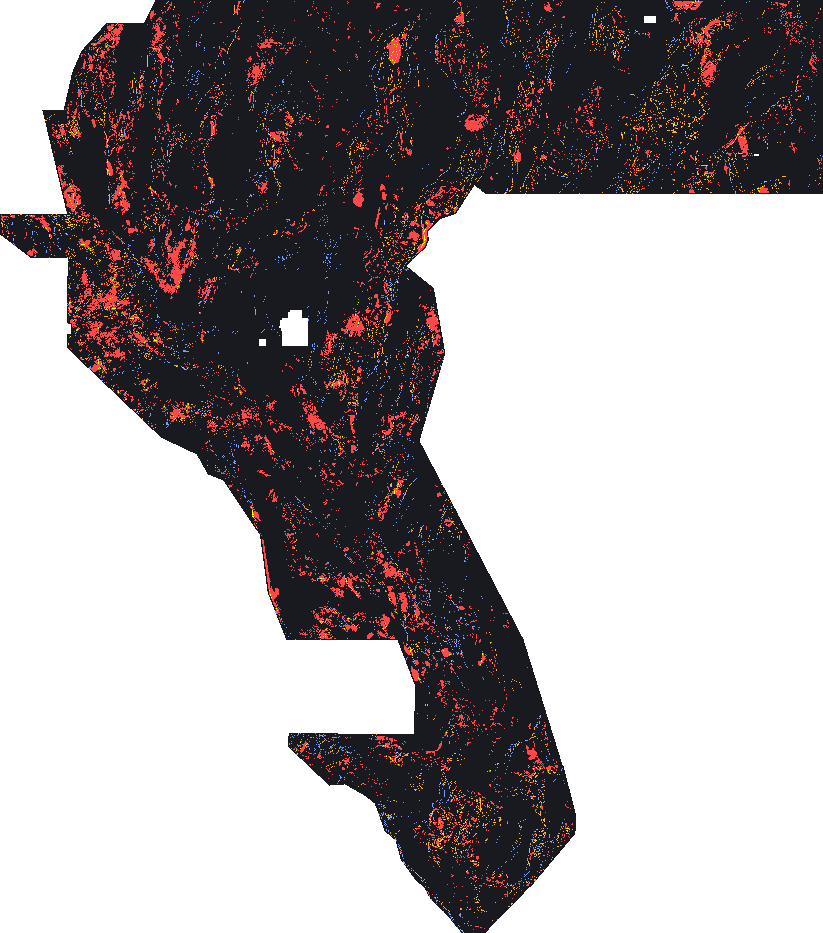

Validation — what was tested, what passed, what failed
Everything on this page is [MEASURED-HERE] unless tagged otherwise: the script,
the inputs' SHA-256 values and the split hash are recorded in
data/evidence/detector_results.json and data/evidence/holdout_manifest.json.
1. The metric implementation is anchored to the official sources
| Check | Anchor | Result |
|---|---|---|
Worked example: TP_w=3.00, FP_w=1.89, FN_w=2.00 → 0.60 |
official problem description, "Scoring example" | reproduced (tests/test_metric.py::test_official_worked_example_arithmetic) |
TP_w + FN_w = |G| for any prediction |
follows from the two published definitions | asserted on synthetic rasters |
DTI = TP_w / (0.2·(TP_w + FP_w) + 0.8·|G|) |
algebra of the published terms | asserted in test_dti_identity_form |
| Known-fault pixels are pixel-exact and free; a 1-px offset is penalised | forum 11516 post 4 (staff) | asserted in test_known_mask_is_pixel_exact_and_free |
Distance weighting: k=1 at 0 px, 2/3 at 1 px, 0 at 3 px |
published kernel | asserted in test_distance_weighting_degrades_with_offset |
2. The holdout is spatially blocked, balanced, and partly sealed
- 512 px (51.2 km) blocks; whole structures, never single pixels.
- Folds balanced greedily on proxy fault mass, so no fold is starved of positives.
- 56 blocks, 4 folds, 14 blocks sealed before any candidate was built; the sealed set was read exactly once, at the end, for the arm that the tuning folds selected.
- Split digest:
data/evidence/holdout_manifest.json→split_sha256(41332369d7dd448b…); inputs pinned by SHA-256 in the same file.
Honest limitation. Blocks are cut on a regular grid, so a fault that happens to straddle a block edge appears on both sides of the split. The collar is the metric's own R = 3 px, which bounds the leak to that width; it is not zero.
3. The shipped candidate (H19-C)

Colours: blue = training catalogue (masked out of scoring, free), orange = SGMC state-map structure lines with no label within 300 m, red = the multi-family physics conjunction. Yellow marks pixels where components coincide.
| Property | Value |
|---|---|
| candidate | H19-C |
| physics support (tuning-fold choice) | 400,000 px |
| physics pixels kept | 388,228 (2.5 % on state-map lines, 1.1 % on the catalogue) |
| state-map component | 82,155 px, of which 61,664 px have no label within 300 m |
| catalogue component | 60,988 px (masked out of scoring by the platform) |
| total emitted | 513,786 px = 9.94 % of the footprint |
| mass the metric can charge for | 452,798 px |
| sealed catalogue read | DTI 0.0229 on 12,676 held-out label px |
Sensitivity — the score the metric would return for this field, as a function of the truth size and of how much of it the field covers. Nothing here is a forecast; it is the metric's own arithmetic applied to the field's paid mass.
| assumed truth size | coverage ρ | resulting DTI |
|---|---|---|
| 30,000 px | 0.1 | 0.0262 |
| 30,000 px | 0.2 | 0.0524 |
| 30,000 px | 0.3 | 0.0786 |
| 30,000 px | 0.5 | 0.1309 |
| 30,000 px | 0.7 | 0.1833 |
| 60,000 px | 0.1 | 0.0433 |
| 60,000 px | 0.2 | 0.0866 |
| 60,000 px | 0.3 | 0.1299 |
| 60,000 px | 0.5 | 0.2165 |
| 60,000 px | 0.7 | 0.3031 |
| 120,000 px | 0.1 | 0.0643 |
| 120,000 px | 0.2 | 0.1286 |
| 120,000 px | 0.3 | 0.1930 |
| 120,000 px | 0.5 | 0.3216 |
| 120,000 px | 0.7 | 0.4503 |
| 240,000 px | 0.1 | 0.0849 |
| 240,000 px | 0.2 | 0.1699 |
| 240,000 px | 0.3 | 0.2548 |
| 240,000 px | 0.5 | 0.4247 |
| 240,000 px | 0.7 | 0.5946 |
4. Arms, controls and the matched-mass comparison
| Arm | Proxy support (px) | Emission (px) | Proxy DTI | Tuning-fold DTI | Per-fold (tuning) | Matched-support DTI (Δ vs shipped file) |
|---|---|---|---|---|---|---|
cond |
60000 | 59,333 | 0.0037 | 0.0030 | 0: 0.002, 1: 0.006, 2: 0.004, 3: 0.000 | 0.0224 (-0.0790) |
conjunction |
250000 | 247,498 | 0.1229 | 0.0073 | 0: 0.010, 1: 0.004, 2: 0.004, 3: 0.011 | 0.0926 (-0.0088) |
control_blanket |
full grid | 5,106,385 | 0.0592 | 0.0592 | — | 0.0592 |
control_random |
60000 | 59,532 | 0.0384 | 0.0200 | 0: 0.013, 1: 0.013, 2: 0.008, 3: 0.042 | 0.0882 (-0.0132) |
deep_mag |
60000 | 59,639 | 0.0110 | 0.0084 | 0: 0.008, 1: 0.007, 2: 0.008, 3: 0.009 | 0.0315 (-0.0699) |
grav_ridge |
120000 | 118,576 | 0.0097 | 0.0034 | 0: 0.002, 1: 0.003, 2: 0.004, 3: 0.004 | 0.0125 (-0.0889) |
known_catalogue |
60000 | 0 | 0.0000 | 0.0000 | 0: 0.000, 1: 0.000, 2: 0.000, 3: 0.000 | 0.0000 (-0.1014) |
mag_ridge |
250000 | 248,272 | 0.0459 | 0.0114 | 0: 0.012, 1: 0.012, 2: 0.006, 3: 0.015 | 0.0357 (-0.0657) |
seis |
60000 | 59,102 | 0.0023 | 0.0000 | 0: 0.000, 1: 0.000, 2: 0.000, 3: 0.000 | 0.0088 (-0.0926) |
strain |
60000 | 59,230 | 0.0164 | 0.0004 | 0: 0.002, 1: 0.000, 2: 0.000, 3: 0.000 | 0.0299 (-0.0715) |
topo_ridge |
120000 | 119,662 | 0.0848 | 0.0245 | 0: 0.020, 1: 0.007, 2: 0.008, 3: 0.060 | 0.1040 (+0.0026) |
Comparator: the previously shipped ens12 field (data/comparator_ens12.tif, 172,974 px) scores 0.1014 on the same proxy population. The proxy population is USGS SGMC structure with no training label within 300 m (61,664 px).
Reading the table:
known_cataloguescores exactly 0.0 on the proxy population. That is the acceptance control: the proxy truth has, by construction, no training label within 300 m, so a catalogue copy cannot earn anything. It confirms the population is not a restatement of the labels.- The matched random lineament network is the control that matters. Any lineament detector can look good simply because faults are lines: a random network with the same support already captures part of the proxy.
- The matched-mass column re-scores every arm at the shipped file's own support (172,974 px) so no arm wins by buying more coverage.
5. The sealed read (pre-registered, single)
Arm selected on the tuning folds: topo_ridge at support 250,000 px. Sealed truth: 10,461 proxy pixels in 14 blocks that no selection step touched.
| Field | Sealed-slice proxy DTI |
|---|---|
topo_ridge |
0.0003 |
shipped ens12 comparator |
0.0085 |
Verdict: the candidate does not beat the comparator on the sealed blocks. This is written here because it is the result, whichever way it fell.
6. What failed, and what that means
- The sealed slice does not confirm a win over the shipped
ens12file. It is reported here rather than dropped: the arm the tuning folds promoted this pass (topo_ridge, 250,000 px) scores 0.0003 against the comparator's 0.0085 on the 14 sealed blocks, and the conjunction — which ties the comparator on the whole proxy population (mean difference −0.0000, P(better) 0.49) — was not promoted. Under the bar this project set (an improvement counts only if it survives the sealed slice and an attempt to argue it away as an artefact), no arm here is a validated replacement for the shipped file. They are candidates whose mechanisms are defensible and whose controls are published beside them. That is the honest state, and it is why the packaged file is labelled a candidate on every page. - Proxy bias. The SGMC proxy is drawn from published state geologic maps, i.e. from surface mapping — so it systematically rewards topographic detectors and under-rewards magnetic ones. The scored population was drawn by experts from the geophysics. This is the single largest threat to the proxy's validity as a selection instrument, and it is the reason the shipped field's physics component is a conjunction (which cannot win by exploiting one proxy's bias) rather than the best-scoring single family.
- Per-block DTI is not a decomposition of the global DTI (the FP term is global). The paired block bootstrap here compares two emission fields block-by-block on the same proxy truth, which is a valid paired comparison, but the numbers are not additive and are never summed into a headline.
- No leaderboard score is claimed. Nothing here is a substitute for the hidden new-fault set; the mean of this project's expectations is a direction, not a prediction.